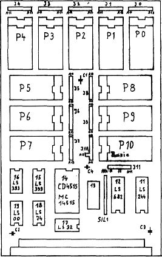

80-Bus Journal |
Juli/Aug./September 1984 · Ausgabe 3 |

Das Computertreffen in Maarsbergen/ Holland anfang September kann man als vollen Erfolg bezeichnen. Die Holländer sind geographisch zwar im Vorteil, da der weiteste Ort etwa 150 Km vom Treffpunkt entfernt lag, aber prinzipiell müßten wir so etwas doch auch schaffen.
Gesucht wird eine Örtlichkeit, die relativ zentral gelegen ist. Frühjahr 85 wäre ein schöner Termin.
Wir warten auf konkrete Vorschläge!
EPROM Port
von Hans Führmann
Schon in Heft 6-83 S. 23 und in Heft 10/11-83 S. 24 wurde über die interessante Schaltung eines EPROM-Ports berichtet. Es wurde auch darauf hingewiesen, daß ein Layout für eine ECB-Karte erstellt werden soll.
Endlich bin ich mit der Entflechtung der Karte fertig; ich habe allerdings die Schaltung etwas geändert, um sämtliche EPROMs von 2716 bis 27512 verwenden zu können.
Den 74154 habe ich durch den C-MOS Typ 4515 ersetzt. Der ist zwar etwas teurer, aber man spart eadurch ein Gehäuse und viel Strom, zudem ist der 74LS154 sehr schlecht lieferbar.
Die Platine ist so gemacht, daß man bei Verwendung von Carrier Sockeln ohne Durchkontaktierung auskommt. Die IC-Symbole habe ich mir mal extra dafür machen lassen, um Carrier Sockel oben zu verlöten. Dazu muß man aus einer Trägerplatte einen senkrechten Kamm machen, mit dessen Hilfe die Sockel nach dem Einlöten oben verlötet werden.
Auf meiner Musterplatine habe ich vier Tantalkondensatoren mit je 10 uF verwendet. Es funktioniert sicher jeder beliebige Wert.
Der Mini-Ausgabe des Journals habe ich entnommen, daß bisher nur eine Bestellung für die Karte vorliegt. Das liegt vielleicht daran, daß die meisten Leser des Journals nicht bemerkt haben, wie praktisch der EPROM-Port ist.
So ergeben eine mc-CPU (SYS), ein EPROM-Port, ein I/O-Interface und die 48x16 Videokarte von Karl Schulmeister einen 64K ECB-Computer, mit dem man sämtliche Software von NAS (auch die im gleichen Speicherbereich wie z.B. BASIC oder Pascal) verwenden kann.
Falls es zu einer Serie kommen sollte, möchte ich jedenfalls zwei Stück bestellen.
Anmerkung der Redaktion: Damit sind es drei Vorbestellungen. Falls Sie auch an solch einer schnellen Lademöglichkeit interessiert sind, bitte bald melden.
| Seite 15 von 52 |
|---|